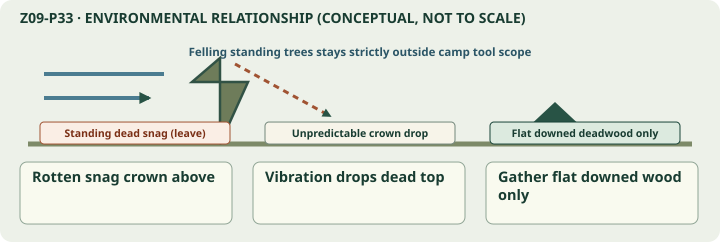

Z09-P33 · Tools and construction · New manuscript
Understand why standing dead trees and overhead felling stay off-limits
Exclude tree felling and dead-snag work from camp tool procedures to prevent catastrophic overhead crushing injuries.
When it applies · All forested campsites, storm-damaged trails and fuel-gathering zones.
Equipment · Daylight visual overhead scan (felling requires certified sawyer training, wedges, PPE and escape paths outside this manual).

Actions
- Recognize that standing dead trees (snags) often have hollow rotted cores, loose bark and brittle upper tops (widowmakers) that break backward straight onto the cutter at the first axe or saw vibration.[K10, E13]
- Restrict ALL camp woodworking and lawful firewood gathering strictly to manageable dead wood already lying flat on the ground.[K10, C17, E13]
- Keep camp, rest stops and tool-work zones well clear of leaning dead trunks, split forks and wind-damaged canopies.[E13, K10]
Failure recognition · Chopping at the base of a leaning dead birch snag for firewood, shaking loose a heavy rotten crown branch directly overhead.[K10, E13]
Verify · Confirm zero standing trees—dead or alive—are cut, wedged or shaken during camp operations.[K10, E13, C17, ED]
Stop or change course · Walk well away from creaking or wind-stressed dead timber; never attempt to knock down a hung-up branch by throwing sticks or chopping its support.[K10, E13]
Evidence and editorial notes
- C17 · NPS · Leave No Trace Seven Principles (current web edition)
- Section: Principle 5 > Minimize Campfire Impacts · Conditions: Permitted backcountry sites where wood fires are allowed
Support: Where fires are permitted, keep fires small, use only dead and downed wood gathered lawfully, burn wood completely to ash, and use a camp stove where wood is scarce or impacts are high.
Limitations: Some parks prohibit all wood gathering or open fires regardless of deadfall availability. · Conflicting evidence: None; balances lawful fuel collection with habitat protection.
Editorial note: Guides lawful fuel gathering and small-fire thermal management. · Specialist reviewer: Land management and fire prevention
Primary source · checked 2026-11-24 - E13 · USDA Forest Service · Hazard Tree Safety (agency PDF)
- Section: What You Can Do to Reduce Risk · Conditions: Forest campsites and stops
Support: Look for dead trees and falling material. Stay away from hazardous trees and move away when winds make the site unsafe.
Limitations: Internal decay and root rot can cause live-looking trees to fail in saturated soils or high wind. · Conflicting evidence: Does not specify a universal exclusion radius; tree height and slope govern fall reach.
Editorial note: Prevents false precision on fall-zone distance while requiring overhead screening. · Specialist reviewer: Land management and arboriculture safety
Primary source · checked 2026-11-24 - K10 · USDA Forest Service · Handtools for Trail Work PDF (agency PDF)
- Section: Felling and Overhead Timber Exclusions · Conditions: Camp wood preparation and trail clearing
Support: Do not fell standing trees or work beneath hung-up limbs without specialized training and gear; restrict routine camp woodworking to small sound downed deadwood where lawful.
Limitations: Standing dead trees (snags) fail unpredictably under vibration or wedging. · Conflicting evidence: Aligns with E13 and C17.
Editorial note: Reinforces strict downed-wood-only woodworking boundary. · Specialist reviewer: Forestry safety and land management
Primary source · checked 2026-11-24
Source lineage · USFS hazard trees and trail handtools; new manuscript · Classification · New manuscript.